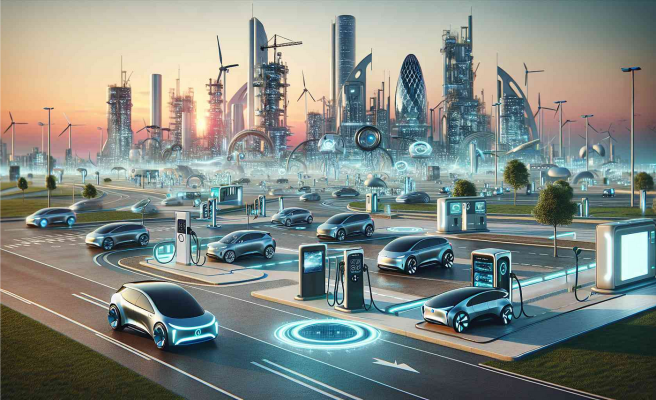

The electric vehicle (EV) market is rapidly evolving, driven by the urgent need for sustainable transportation solutions. As cities grapple with pollution and climate change, e-mobility has emerged as a viable alternative, promising to reduce greenhouse gas emissions and dependence on fossil fuels. Innovation plays a pivotal role in this transition, with several key advancements shaping the future of e-mobility. This blog explores six critical innovations that are set to redefine the electric vehicle landscape.
1. EVs with a Longer Driving Range
Advancements in battery technology are crucial for extending the driving range of electric vehicles. Innovations such as solid-state batteries and improved lithium-ion technologies are leading to batteries that can hold more energy while being lighter and safer. For instance, Tesla's upcoming models are expected to achieve ranges exceeding 400 miles on a single charge, significantly enhancing consumer confidence and adoption rates. As driving ranges increase, potential buyers are less likely to experience range anxiety, making EVs a more attractive option.
2. Ultra-Fast Charging
Ultra-fast charging technology is revolutionizing how quickly EVs can be recharged. With charging stations capable of delivering up to 350 kW, drivers can replenish their batteries in as little as 15-30 minutes. This technology not only alleviates range anxiety but also minimizes downtime, making electric vehicles more practical for long-distance travel. The expansion of charging infrastructure, particularly along highways and in urban areas, is essential to support this rapid charging capability, ensuring that drivers can easily access charging stations when needed.
3. Smart Charging
Smart charging systems are integral to managing energy consumption efficiently. These systems allow EVs to communicate with the power grid, optimizing charging times based on energy availability and cost. By integrating smart charging with renewable energy sources, consumers can charge their vehicles during off-peak hours or when solar or wind energy is abundant. This not only benefits the consumer through reduced energy costs but also helps stabilize the grid, making it a win-win for both users and energy providers.

4. Electric Autonomous Vehicles
The convergence of electric vehicles and autonomous driving technology presents a transformative opportunity for the automotive industry. Electric autonomous vehicles (EAVs) promise to reduce emissions while enhancing safety through advanced driver-assistance systems. Companies like Waymo and Tesla are in charge of developing EAVs, which have the potential to revolutionize public transportation and personal mobility. With ongoing advancements in artificial intelligence and machine learning, the future of EAVs looks promising, paving the way for safer, more efficient transportation.
5. Vehicle-to-Everything (V2X)
Vehicle-to-Everything (V2X) technology enables communication between vehicles, infrastructure, and other road users. This interconnectedness enhances safety and efficiency by allowing vehicles to share information about traffic conditions, accidents, and road hazards in real-time. V2X can significantly improve traffic management and reduce congestion, contributing to a smoother and safer driving experience. As cities invest in smart infrastructure, the integration of V2X technology will become increasingly vital for the future of urban mobility.
6. Wireless Charging
Wireless charging technology offers a convenient solution for EV owners, eliminating the need for physical charging cables. This technology utilizes electromagnetic fields to transfer energy between a charging pad and the vehicle, allowing for seamless charging while parked or even while driving over specially equipped roads. The advantages of wireless charging include reduced wear and tear on charging ports, enhanced user convenience, and the potential for innovative infrastructure designs that integrate charging capabilities into urban environments.
Conclusion
These key innovations are shaping the future of e-mobility, each contributing to the broader adoption and efficiency of electric vehicles. As battery technology improves, charging infrastructure expands, and smart systems are implemented, the landscape of transportation is poised for a significant transformation. The combined impact of these advancements not only promises a cleaner environment but also a more efficient and user-friendly transportation system.